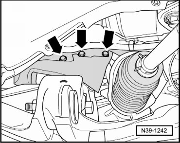
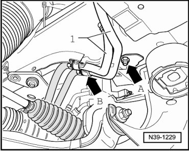
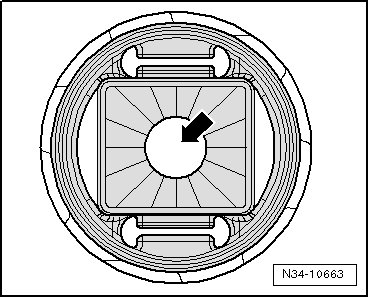
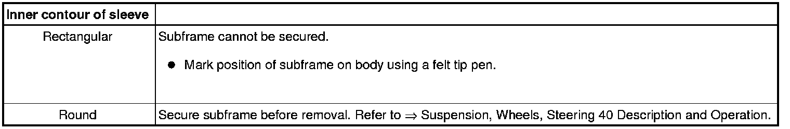
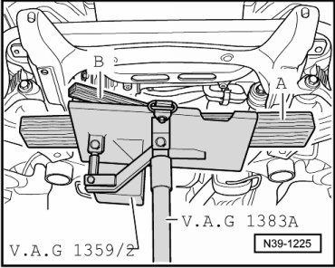
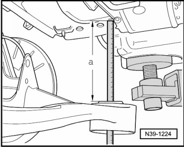
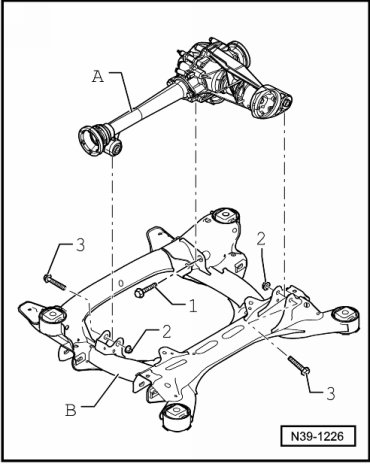
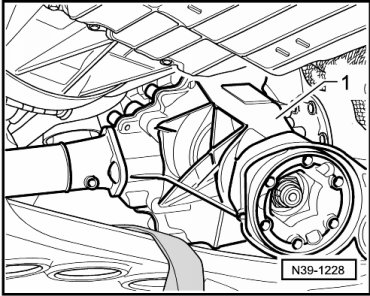
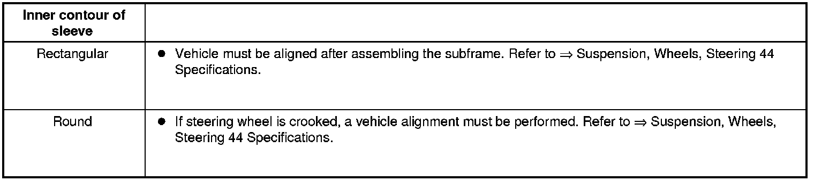

Front Final Drive
Front Final Drive
Special tools, testers and auxiliary items required
• Tensioner hooks (VW 552)
• Spindle (10 - 222 A /11)
• Torque wrench (VAG 1331)
• Torque wrench (VAG 1332)
• Engine and transmission jack (VAG 1383 A) with universal transmission adapter (1359/2)
• Socket insert (T10099/1)
- Loosen wheel bolts.
- Raise vehicle.
- Remove front wheels.
- Remove front left and right wheel housing liners.
- If equipped with air spring struts, the air line connection - 1 - must be loosened and allow the air to escape. Then, tighten the connection to specification..

- Hook the tensioner hooks (VW 552) onto each side of vehicle in upper openings of wheel housing - arrow A - and in upper control arms - arrow B -.
- Pretension the control arm slightly so that ball joint pin of control arm will not be damaged.
- Remove noise insulation below engine/transmission.
- If an underbody impact guard is located beneath the front final drive, remove it..
- Remove noise insulation retainer.
- Remove drive axle shield - arrows - and shield from front final drive.

- Remove driveshaft bolts - arrows A - and remove the drive axle. Refer to --> [ Front Driveshaft ] Removal and Installation.

- Remove left and right drive axles. To loosen bolts, use socket insert (T10099/1) if necessary.
- If equipped, remove shield - A - from steering gear (2 bolts).

- Remove bolt - B - for universal joint on steering gear and pull universal joint from steering gear.
- If equipped, remove coolant pipes - 1 - from left longitudinal member. When doing this, remove nut - arrow A - and bracket - arrow B -.

- Hook spindles (10 - 222 A /11) in the eyes - arrow - of subframe on left and right sides of vehicle.

- Set a wooden block - A - approximately 300 mm long into the hanger of each spindle (10 - 222 A /11).

- The hangers must face toward the rear.
- Tighten winged nuts of spindles, ensuring that the wooden blocks lie against the subframe - B -.
- Place insert from a trolley jack into engine and transmission holder (VAG 1383 A).
- Place the engine and transmission holder (VAG 1383 A) and a wooden block - A - under the subframe and lightly press against it.

- Remove one of the subframe bolts - arrows -.
- Check inner contour of sleeve - arrow - in bonded rubber bushing.


- Remove bolts for subframe from body - arrows - in Fig. N39-1222.
- Disconnect left and right - 1 - coupling rods from stabilizer bar.

- Remove threaded connection from air spring strut or strut to lower control arm. Thereby, the subframe must be lowered via the spindles (10 - 222 A /11) by approximately 50 mm - direction of arrow - to remove bolt - 2 -.
- Use these bolts - 2 - with additional washers, or bolts M14 x 1.5 approximately 90 mm long, to secure subframe to body on left and right - 3 -.
- Remove the engine and transmission holder (VAG 1383 A) from under the subframe.
- Place the engine and transmission holder (VAG 1383 A) with universal transmission adapter (1359/2) under the subframe and lightly press against it. When doing this, place wooden block - A - underneath subframe and - B - under front final drive.

- Secure subframe with belt from universal transmission adapter (VAG 1359/2).
- Remove spindles (10 - 222 A /11) from subframe.
- Pull breather line - A - with connecting nipple - arrow - carefully off from front final drive.

- Carefully lower subframe with front final drive to dimension - a -, approximately 200 mm.

- Measure dimension - a - between body and fastening surface of subframe.
- Remove bolts with nuts - 1 - through - 3 - for front final drive - A - on subframe - B -.

A second technician is required to remove front final drive.

- Remove front final drive - 1 - rearward between subframe and engine/transmission as follows:
- First tie up left drive axle.
- Then have second technician remove front final drive from supports in subframe.
- In the process, guide right drive axle out of flange shaft.
- Raise front final drive over steering gear and guide out toward the rear.
installing
Install in reverse sequence; note the following points:
Always replace bolts for front driveshaft.
A second technician is required to insert front final drive into subframe supports.
- Install bolts with nuts - 1 - through - 3 - for front final drive - A - on subframe - B -.
- Raise subframe using transmission jack.
- Push breather line - A - with connecting nipple - arrow - carefully into front final drive. When doing so, the connecting nipple must be stand vertical and be inserted between the raised areas of the housing.
- Hook spindles (10 - 222 A /11) in the eyes - arrow - of subframe on left and right sides of vehicle.
- Set a wooden block approximately 300 mm long into the hanger of each spindle (10 - 222 A /11).
- The hangers must face toward the rear.
- Tighten winged nuts of spindles, ensuring that the wooden blocks lie against the subframe - B -.
- Remove the engine and transmission holder (VAG 1383 A) from under the subframe.
- Place insert from a trolley jack into engine and transmission holder (VAG 1383 A).
- Place the engine and transmission holder (VAG 1383 A) with a block of wood - A - under the subframe and raise until its press against it.
- Remove the temporarily installed bolts - 3 - for subframe on left and right.
- Install bolts - 2 - for air spring strut or strut on lower control arm.
- Fasten the coupling rods on left and right - 1 - to stabilizer.
- Before bolting on subframe, check inner contour of bonded rubber bushing sleeve in subframe - arrow -.

- Install the subframe bolts. Refer - arrows - --> Suspension, Wheels, Steering 40 Description and Operation.
- If an axle alignment was performed, the bolts must be replaced.
- Tighten bolts to specifications.
- Remove spindles (10 - 222 A /11) from subframe.
- Install universal joint on steering gear and tighten bolt - B - to specification.
- If equipped, install shield - A - to steering gear.
- If equipped, install coolant pipes - 1 - on left longitudinal member. When doing this, tighten nut - arrow A - and bracket - arrow B -.
- Connect front driveshaft. Refer to --> [ Front Driveshaft ] Removal and Installation.
- Install drive axle shield and bolts - arrows - tighten bolts to 10 Nm.
- Install drive axles to flange shafts.
- Remove tensioner hooks (VW 552).
- Install front left and right wheel housing liners.
- Check gear oil in front final drive. Refer to --> [ Gear Oil Checking ] Gear Oil Checking.
- If an underbody impact guard is located beneath the front final drive, install it..
- Install front wheels and tires.
- After installation, a vehicle alignment must be performed if necessary.